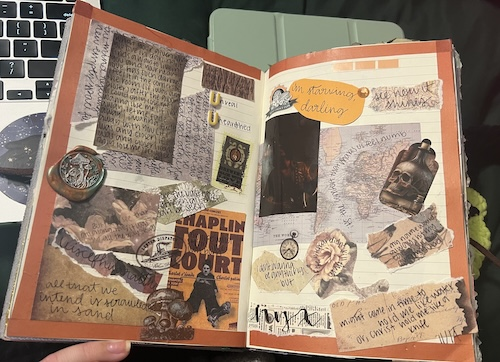

I have a habit of picking up random hobbies, being obsessed with them for a time period, and then moving on to a different thing. Sometimes the time period of the hobby depends on how 'hard' the hobby is but honestly most of them last a couple of months. This is something I have been doing since I was a chiild. Now I have picked up so many that now I can essentially cycle through them.
Since I have been cycling through these different hobbies I want to categorize them. I have decided to put them in three categories: before college, during college, and finally both before and during. I broke them up this way because they do differ based on what part of my life I did them. Some have not carried over to college, hence that being the changepoint.
| Before College | During College | Both |
|---|---|---|
| Knitting | Coloring | Journaling |
| Photo Editing | Drawing | Reading |
| Gaming | Painting my nails | Binge Watching Shows |
These are some coloring pages
This is some nail art I did for Christmas.
Here are some journal pages!
